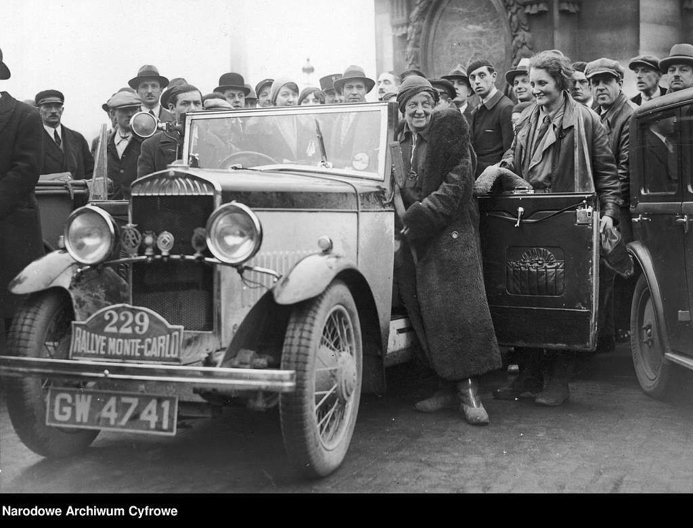

This page summarises the history of Rally
The history of rally in motorsport is a fascinating journey that spans over a century, marked by the evolution of automotive technology, changing regulations, and the rise of iconic drivers and events. Here's an overview of the key milestones in the history of motorsport rally:

Early 20th Century: The Genesis
 1907-1911: Pioneering Events The origins of rally can be traced back to the early 20th century. One of the earliest examples was the 1907 Peking to Paris motor race. However, the first event to be explicitly called a "rally" was the Monte Carlo Rally of 1911. This event was designed to showcase improvements in automotive technology and the durability of vehicles.1920s-1930s: Growing Popularity Throughout the 1920s and 1930s, rallying gained popularity in Europe. Events like the Monte Carlo Rally, the Alpine Rally, and the RAC Rally in the UK became fixtures in the motorsport calendar. These rallies were primarily endurance tests for both car and driver.
Post-World War II: Evolution and Professionalism
1950s: Emergence of Specialized Cars
After World War II, rallying began to evolve rapidly. Cars became more specialized, and the sport started to attract professional drivers. The Alpine Rally awarded the Coupe des Alpes to drivers who completed the course without incurring a penalty.1960s: The Birth of Modern Rally
The 1960s saw the birth of the modern rally. This era was characterized by the introduction of stage timing and point-to-point timed stages, which replaced the older endurance format. The decade also saw the emergence of the East African Safari Rally, which became one of the most challenging events.
Late 1960s-1970s: Increasing Competition
This period witnessed increasing competition and the introduction of factory teams by major car manufacturers. Cars like the Mini Cooper, Ford Escort, and Lancia Stratos became icons of rallying.1973: World Rally Championship (WRC)
Establishment of WRC The World Rally Championship was established in 1973, providing a global platform for the sport. The WRC brought more structure and attracted more manufacturer participation.